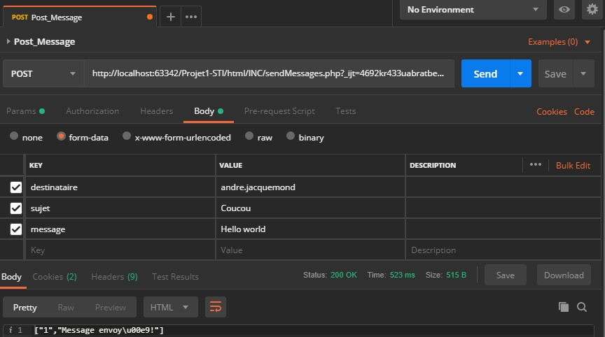

STI
Présentation Projet 2
Léo Cortès, Steve Henriquet
Vulnérabilités

XSS
- Stockée
- Possiblité de récupérer des id de session
- Usurper des identités (admin)
Assainissement des entrées utilisateur
SQL Injection
- Bypasser le mot de passe => Connection comme n'importe quel utilisateur
- Modifier le mot de passe d'un autre utilisateur
Utilisation de prepared statements
Accès aux fonctions sans login
Possibilité de faire de requêtes sans se logger pour effecter des actions comme envoyer un message anonyme
Vérifier l'existance de variable de session
Autres modifications
- Protection anti-spamm
- Vérification des actions admin

Autre
- Pas de HTTPS
- Données non chiffrées
- Mots de passes non hashés
Pour simplifier le développement, nous n'avons pas modifié ces quelques aspects
Démonstration